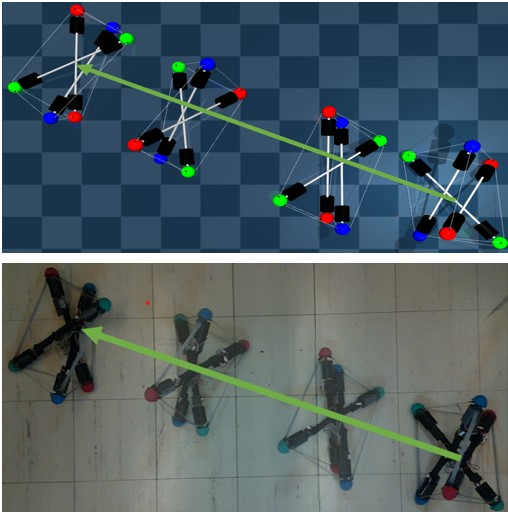

|

|
|
Abstract:
Tensegrity robots, composed of rigid rods and flexible cables, exhibit high strength-to-weight ratios and significant deformations, which enable them to navigate unstructured terrains and survive harsh impacts. They are hard to control, however, due to high dimensionality, complex dynamics, and a coupled architecture. Physics-based simulation is a promising avenue for developing locomotion policies that can be transferred to real robots. Nevertheless, modeling tensegrity robots is a complex task due to a substantial sim2real gap. To address this issue, this paper describes a Real2Sim2Real (R2S2R) strategy for tensegrity robots. This strategy is based on a differentiable physics engine that can be trained given limited data from a real robot. These data include offline measurements of physical properties, such as mass and geometry for various robot components, and the observation of a trajectory using a random control policy. With the data from the real robot, the engine can be iteratively refined and used to discover locomotion policies that are directly transferable to the real robot. Beyond the R2S2R pipeline, key contributions of this work include computing non-zero gradients at contact points, a loss function for matching tensegrity locomotion gaits, and a trajectory segmentation technique that avoids conflicts in gradient evaluation during training. Multiple iterations of the R2S2R process are demonstrated and evaluated on a real 3-bar tensegrity robot.
|

![[PHOTO]](../../images/knight_small.png)